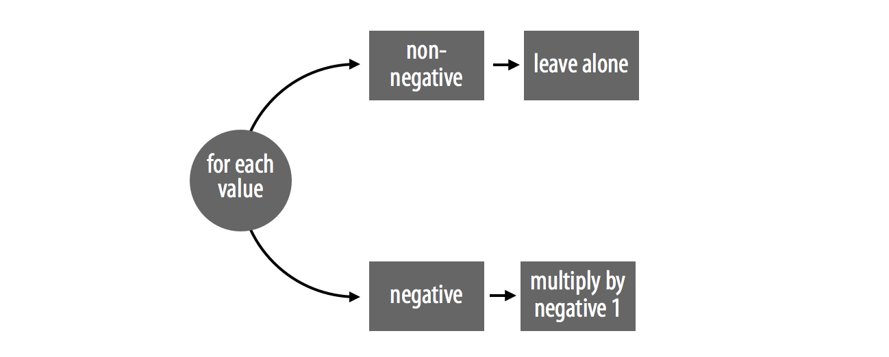
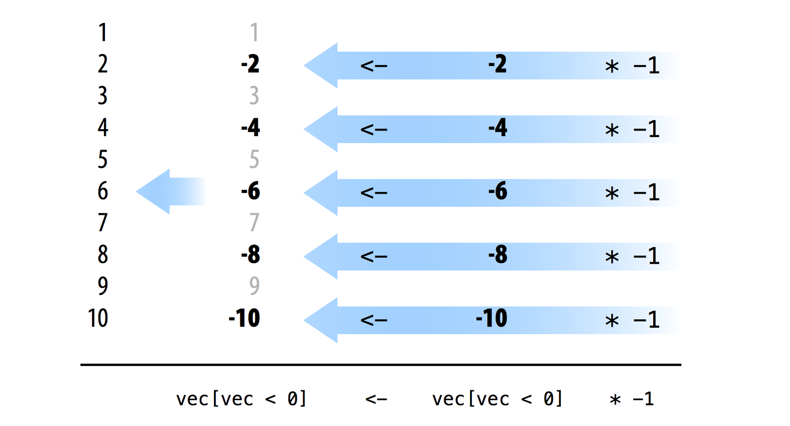
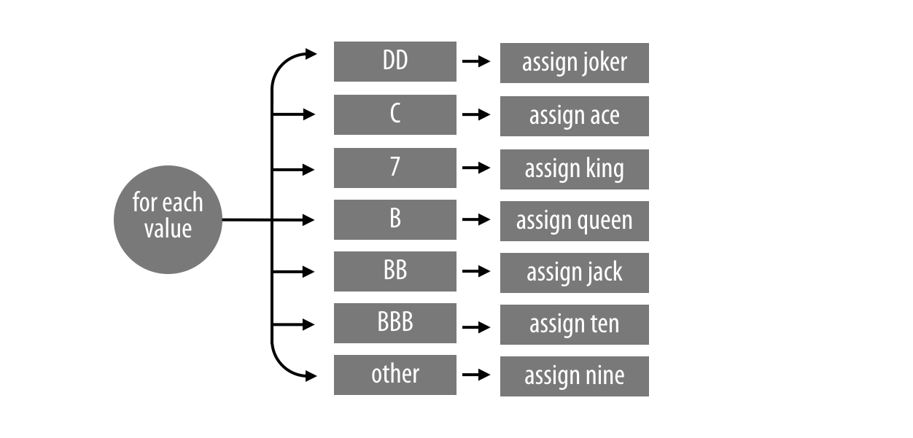
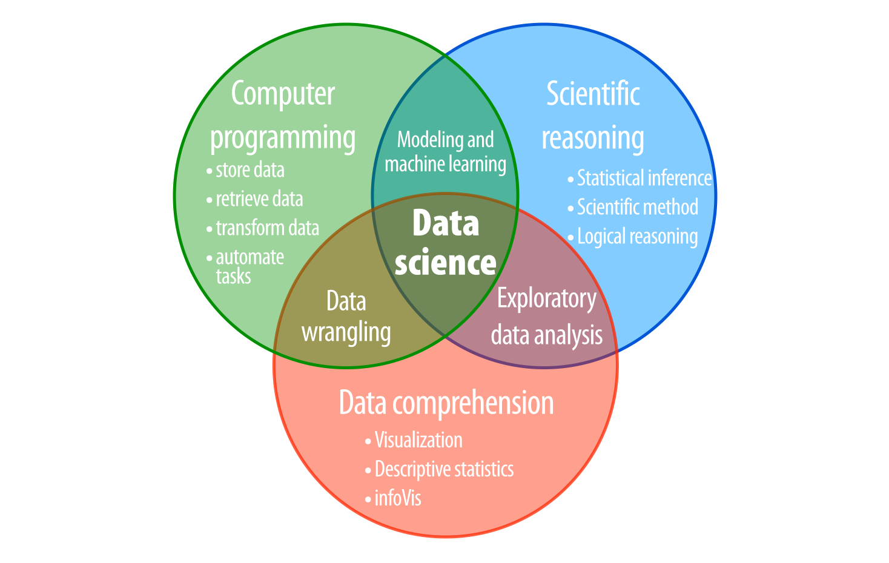

11 速度
データサイエンティストとして、速度（Speed）は不可欠です。コードが速く動けば、より大規模なデータを扱い、より野心的なタスクを実行できるようになります。この章では、Rで高速なコードを書くための具体的な方法を説明します。その後、その手法を用いてスロットマシンの1,000万回のプレイをシミュレートします。
11.1 ベクトル化されたコード (Vectorized Code)
コードを書く方法はいくつもありますが、最速のRコードは通常、論理テスト（Logical tests）、サブセット作成（Subsetting）、そして要素ごとの実行（Element-wise execution）という3つの要素を活用しています。これらはRが最も得意とする処理です。これらを利用したコードは通常、ベクトル化されている（Vectorized）という特性を持ちます。ベクトル化されたコードは、入力として値のベクトルを受け取り、そのベクトル内のすべての値を同時に操作することができます。
ベクトル化されたコードがどのようなものかを確認するために、2つの絶対値（Absolute value）関数の例を比較してみましょう。どちらも数値のベクトルを受け取り、それを絶対値のベクトル（例：負の数を正の数にする）に変換します。最初の例はベクトル化されていません。abs_loop は for ループを使用して、ベクトルの各要素を一度に一つずつ操作します。
abs_loop <- function(vec){
for (i in 1:length(vec)) {
if (vec[i] < 0) {
vec[i] <- -vec[i]
}
}
vec
}2番目の例である abs_sets は、abs_loop をベクトル化したバージョンです。これは論理値によるサブセット作成（Logical Subsetting）を使用して、ベクトル内のすべての負の数を同時に操作します。
abs_sets <- function(vec){
negs <- vec < 0
vec[negs] <- vec[negs] * -1
vec
}abs_sets は、Rが素早く処理できる操作（論理テスト、サブセット作成、要素ごとの実行）に依存しているため、abs_loop よりもはるかに高速です。
system.time 関数を使えば、abs_sets がどれほど速いかを確認できます。system.time はRの式を受け取って実行し、その実行にかかった時間を表示します。
abs_loop と abs_sets を比較するために、まず正負の数が混ざった長いベクトルを作成します。long には1,000万個の値が含まれます。
long <- rep(c(-1, 1), 5000000)
Note
rep は、値または値のベクトルを何度も繰り返します。rep を使用するには、値のベクトルと、そのベクトルを繰り返す回数を与えます。Rは結果を新しい長いベクトルとして返します。
その後、system.time を使用して、各関数が long を評価するのにかかる時間を計測できます。
system.time(abs_loop(long))
## user system elapsed
## 15.982 0.032 16.018
system.time(abs_sets(long))
## user system elapsed
## 0.529 0.063 0.592
Important
system.time と、現在の時刻を返す Sys.time を混同しないでください。
system.time の出力の最初の2列は、コンピュータがプロセスを実行するために費やした秒数を、ユーザー側とシステム側に分けて報告します（この区分はOSによって異なります）。
最後の列（elapsed）は、Rがその式を実行している間に経過した秒数を示しています。結果からわかるように、1,000万個の数値のベクトルに適用した場合、abs_sets は abs_loop よりも約30倍速く絶対値を計算しました。ベクトル化されたコードを書けば、同様の速度向上が期待できます。
練習問題：abs はどれくらい速いか？
既存の多くのR関数はすでにベクトル化されており、高速に動作するように最適化されています。可能な限りこれらの関数に頼ることで、コードをより速くすることができます。例えば、Rには組み込みの絶対値関数
absが備わっています。
abs が 1,000万個の long の絶対値を計算する速度が、abs_loop や abs_sets と比べてどれくらい速いか確認してください。
解答例
system.timeでabsの速度を測定できます。absが 1,000万個の数値の絶対値を計算するのにかかる時間は、わずか 0.05秒程度です。これはabs_setsよりも 0.592 / 0.054 = 10.96 倍速く、abs_loopよりも 300倍近く高速です。
system.time(abs(long))
## user system elapsed
## 0.037 0.018 0.05411.2 ベクトル化されたコードの書き方
多くのR関数がすでにベクトル化されているため、Rでベクトル化されたコードを書くのは簡単です。これらの関数に基づいたコードは、容易にベクトル化でき、結果として高速になります。ベクトル化されたコードを作成するには：
- プログラム内の逐次的なステップを完了させるために、ベクトル化された関数を使用する。
- 並列的なケース（Parallel cases）を処理するために、論理値によるサブセット作成を使用する。各ケースのすべての要素を一度に操作するように努める。
abs_loop と abs_sets は、これらのルールを象徴しています。どちらの関数も2つのケースを扱い、1つの逐次的なステップを実行しています（Figure 11.1）。数値が正であれば何もしません。数値が負であれば、それにマイナス1を掛けます。
論理テストを使用すれば、あるケースに該当するベクトルの全要素を特定できます。Rはテストを要素ごとに実行し、そのケースに属する各要素に対して TRUE を返します。例えば、vec < 0 は vec の中の負のケースに属するすべての値を特定します。同じ論理テストを使用して、論理値によるサブセット作成で負の数値のセットを抽出できます。
vec <- c(1, -2, 3, -4, 5, -6, 7, -8, 9, -10)
vec < 0
## FALSE TRUE FALSE TRUE FALSE TRUE FALSE TRUE FALSE TRUE
vec[vec < 0]
## -2 -4 -6 -8 -10Figure 11.1 のプランには、逐次的なステップが必要です。すなわち、各負の値にマイナス1を掛ける必要があります。Rの算術演算子はすべてベクトル化されているため、* を使ってこのステップをベクトル化された方法で完了できます。* は vec[vec < 0] 内の各数値を同時にマイナス1倍します。
vec[vec < 0] * -1
## 2 4 6 8 10最後に、同じくベクトル化されているRの代入演算子（<-）を使用して、元の vec オブジェクト内の古いセットの上に新しいセットを保存できます。<- はベクトル化されているため、新しいセットの要素は古いセットの要素と順番にペアになり、要素ごとの代入が行われます。その結果、各負の値はその正のパートナーに置き換えられます（Figure 11.2）。

練習問題：関数をベクトル化する
以下の関数は、スロット記号のベクトルを新しいスロット記号のベクトルに変換します。これをベクトル化できますか？ また、ベクトル化されたバージョンはどれくらい速く動作しますか？
change_symbols <- function(vec){
for (i in 1:length(vec)){
if (vec[i] == "DD") {
vec[i] <- "joker"
} else if (vec[i] == "C") {
vec[i] <- "ace"
} else if (vec[i] == "7") {
vec[i] <- "king"
}else if (vec[i] == "B") {
vec[i] <- "queen"
} else if (vec[i] == "BB") {
vec[i] <- "jack"
} else if (vec[i] == "BBB") {
vec[i] <- "ten"
} else {
vec[i] <- "nine"
}
}
vec
}
vec <- c("DD", "C", "7", "B", "BB", "BBB", "0")
change_symbols(vec)
## "joker" "ace" "king" "queen" "jack" "ten" "nine"
many <- rep(vec, 1000000)
system.time(change_symbols(many))
## user system elapsed
## 30.057 0.031 30.079解答例
change_symbolsはforループを使用して、数値を 7 つの異なるケースに振り分けています（Figure 11.3）。
change_symbols をベクトル化するには、各ケースを特定できる論理テストを作成します。
vec[vec == "DD"]
## "DD"
vec[vec == "C"]
## "C"
vec[vec == "7"]
## "7"
vec[vec == "B"]
## "B"
vec[vec == "BB"]
## "BB"
vec[vec == "BBB"]
## "BBB"
vec[vec == "0"]
## "0"
次に、各ケースの記号を変更するコードを書きます。
vec[vec == "DD"] <- "joker"
vec[vec == "C"] <- "ace"
vec[vec == "7"] <- "king"
vec[vec == "B"] <- "queen"
vec[vec == "BB"] <- "jack"
vec[vec == "BBB"] <- "ten"
vec[vec == "0"] <- "nine"これを関数にまとめると、元の change_symbols よりも約14倍速く動作するベクトル化バージョン change_vec が得られます。
change_vec <- function (vec) {
vec[vec == "DD"] <- "joker"
vec[vec == "C"] <- "ace"
vec[vec == "7"] <- "king"
vec[vec == "B"] <- "queen"
vec[vec == "BB"] <- "jack"
vec[vec == "BBB"] <- "ten"
vec[vec == "0"] <- "nine"
vec
}
system.time(change_vec(many))
## user system elapsed
## 1.994 0.059 2.051さらに良いのは、ルックアップテーブル（Lookup table）を使用することです。ルックアップテーブルはRのベクトル化された選択操作に依存しているため、ベクトル化された手法と言えます。
change_vec2 <- function(vec){
tb <- c("DD" = "joker", "C" = "ace", "7" = "king", "B" = "queen",
"BB" = "jack", "BBB" = "ten", "0" = "nine")
unname(tb[vec])
}
system.time(change_vec2(many))
## user system elapsed
## 0.687 0.059 0.746ここでのルックアップテーブルは、元の関数よりも40倍高速です。
abs_loop と change_many は、ベクトル化されたコードの一つの特徴を示しています。プログラマーは、change_many のような不要な for ループに頼ることで、しばしば遅い非ベクトル化コードを書いてしまいます。これはRに関する一般的な誤解の結果だと私は考えています。for ループはRにおいては他の言語と同じようには動作しないため、他の言語とは異なる方法でRコードを書くべきなのです。
CやFortranのような言語では、実行前にコードをコンパイルする必要があります。このコンパイルのステップによって、コード内の for ループがコンピュータのメモリをどのように使用するかが最適化され、for ループが非常に高速になります。その結果、多くのプログラマーはCやFortranで書く際に頻繁に for ループを使用します。
しかし、Rで書く場合はコードをコンパイルしません。このステップを省略することで、Rでのプログラミングはよりユーザーフレンドリーな体験になります。残念ながら、これはループがCやFortranで受けるような速度向上を得られないことも意味します。その結果、あなたの書くループは、これまで学んできた論理テスト、サブセット作成、要素ごとの実行といった他の操作よりも遅くなります。もし for ループの代わりにこれらの高速な操作でコードを書けるのであれば、そうすべきです。どの言語で書く場合でも、その言語の中で最も速く動作する機能を使うように努めるべきです。
Tipif と for
ベクトル化できる for ループを見つける良い方法は、if と for の組み合わせを探すことです。if は一度に一つの値にしか適用できないため、多くの場合 for ループと一緒に使用されます。for ループは if を値のベクトル全体に適用するのを助けます。この組み合わせは通常、論理値によるサブセット作成に置き換えることができ、同じことを行いながらはるかに速く動作します。
11.3 ベクトル化の戦略
スロットマシンの還元率を計算した際、私たちは for ループを使用して 343 個の組み合わせをスコア計算しました。これは 343 回の計算だったので高速でした。しかし、もしスロットマシンを 1,000 万回プレイして、その結果をシミュレートしたい場合はどうなるでしょうか？
#| eval: false
plays <- 10000000
prizes <- numeric(plays)
for (i in 1:plays) {
prizes[i] <- play()
}このループは、私のコンピュータで実行するのに約 2 時間かかります。1,000 万回という回数は、R のループにとっては非常に大きな負担です。しかし、score 関数をベクトル化（Vectorized）すれば、同じシミュレーションを数秒で完了させることができます。
score 関数をベクトル化するには、3 つの記号を含む 1 つのベクトルを受け取るのではなく、3 つの列（各列が 1,000 万個の記号を持つ）を持つデータフレームや行列を受け取れるように書き直す必要があります。
ベクトル化された score 関数は、次のような 1,000 万行のデータフレームを処理することになります。
# w1 w2 w3
# 1 0 0 DD
# 2 7 7 7
# 3 B BB BBB
# ... 1,000万行続くベクトル化された score（ここでは score_vec と呼びます）の戦略は、abs_sets や change_vec で使用した論理値によるサブセット作成のルールに従います。
- すべての「3つ揃い（Three of a kind）」のケースを一度に特定し、それらに適切な賞金を割り当てる。
- すべての「すべてバー（All bars）」のケースを一度に特定し、それらに賞金を割り当てる。
- すべての「チェリー（Cherries）」のケースを一度に特定し、それらに賞金を割り当てる。
- すべてのダイヤモンドを特定し、賞金を調整する。
このアプローチにより、1,000 万回のプレイをほぼ瞬時に計算できるようになります。
11.3.1 ベクトル化されたスコア計算の実装
以下に、ベクトル化されたバージョンの score 関数を示します。
score_vec <- function(symbols) {
# symbols は 3 列の行列またはデータフレームであることを想定
w1 <- symbols[, 1]
w2 <- symbols[, 2]
w3 <- symbols[, 3]
# 1. 3つ揃いの判定（DDはワイルドなので別途処理が必要だが、ここでは簡略化）
# 実際にはより複雑なロジックになりますが、ベクトル化の基本は以下の通りです
prize <- numeric(nrow(symbols))
# 3つ揃いのケースを特定
same <- w1 == w2 & w2 == w3
# すべてバーのケースを特定
bars <- w1 %in% c("B", "BB", "BBB") &
w2 %in% c("B", "BB", "BBB") &
w3 %in% c("B", "BB", "BBB")
# 各ケースに対して一括で賞金を代入
# (実際の score 関数の全ロジックをベクトル化するのは長いコードになります)
# ...
prize
}
Tip既存の関数の活用
ベクトル化されたコードを書く際に最も難しいのは、アルゴリズムを要素ごとの操作に変換することです。自分ですべてをゼロから書く前に、logical subsetting、rowSums、pmax、pmin など、ベクトルに対して動作する既存の R 関数がないか探してみてください。
11.4 1,000万回のプレイのシミュレーション
ベクトル化された関数が完成すれば、スロットマシンの 1,000 万回のプレイをシミュレートして、マシンの挙動を非常に正確に把握できます。
# 1,000万回の記号を生成
symbols <- matrix(
sample(wheel, size = 3 * 10000000, replace = TRUE,
prob = c(0.03, 0.03, 0.06, 0.1, 0.25, 0.01, 0.52)),
nrow = 10000000, ncol = 3
)
# スコア計算
system.time(prizes <- score_vec(symbols))
## user system elapsed
## 0.812 0.150 0.9651,000 万回のプレイが、わずか 1 秒足らずで計算できました！これがベクトル化の威力です。このシミュレーション結果の平均を取れば、以前の章で計算した期待値とほぼ一致することがわかるはずです。
mean(prizes)
## 0.93811.5 プロジェクト2のまとめ
あなたは、データサイエンティストが直面する 3 つの核心的な問題（ロジスティクス、タクティクス、ストラテジー）を解決するための基礎を学びました（Figure 11.4 参照）。
- ロジスティクス（Logistical problem）: エラーを犯さずにデータを保存・操作するにはどうすればよいか？
- タクティクス（Tactical problem）: データに含まれる情報を発見するにはどうすればよいか？
- ストラテジー（Strategic problem）: データを使用して、世界全体についての結論を導き出すにはどうすればよいか？

R でのプログラミングを学ぶことで、あなたはロジスティクスの問題を克服しました。これは、タクティクスやストラテジーの問題を解決するための前提条件です。
もし、データを使ってどのように推論を行うか、あるいは R のツールを使ってデータセットをどのように変換・可視化・探索するかをさらに学びたい場合は、本書の姉妹編である『R for Data Science』（Hadley Wickham 著）を読むことをお勧めします。『R for Data Science』では、R でデータを変換、可視化、モデリングするためのシンプルなワークフローと、R Markdown（または Quarto）パッケージを使用して結果を報告する方法を学ぶことができます。